This is the supporting material for a hands-on workshop that introduces you to fundamental API Management concepts and the Apigee API Management Platform. We call this event an "Apigee API Jam". This module - the "Module 1" - focuses on giving attendees an overall understanding of how to build a successful API program with a well managed developer ecosystem. Attendees will learn how to manage their APIs across all phases of the API Lifecycle - including API design, API Security, Developer consumption, as well as API Analytics and Monitoring.

All of the material here is released under the Apache 2.0 license
Labs
- API Design & Creation - Design OAS & Create a Reverse Proxy with the OpenAPI specification Link
- API Products, Apps & API Keys - Securing APIs with API Keys, bundle APIs into API Products and understand the association between Apps, API Products & API Keys Link
- Rate Limiting: Rate Limit API Consumption based on API Product tier quotas. Link
- App Developer Experience - Publish API Products Catalog through a self-service Developer Portal. Test App Developer on-boarding experience & API consumption. Restrict access to resources using Teams and Audience entitlements. Link
- API Analytics - Measure API Program Success with Apigee Analytics Link
You can start with the first lab 1. API Design - Design & Create an API Proxy with OpenAPI specification
Apigee Community
If you have any questions/comments please visit https://community.apigee.com/index.html
This repository is not an official Google or Apigee product. This repository is used for educational/training purposes only.
Duration : 15 mins
Persona : API Team
Use case
You have a requirement to create a reverse proxy to handle requests from the Internet and forward them to an existing service. You have decided to follow a design first approach and built a reusable component, a specification which can be used to describe the API contract, generate API documentation, generate API test cases, etc., using the OpenAPI Specification. You would like to generate an Apigee API Proxy by using the OpenAPI Specification (fka: Swagger) instead of building the API Proxy from scratch.
How can Apigee API Management help?
Apigee enables you to quickly expose services as APIs. You do this by creating an API proxy, which provides a facade for the service that you want to expose, such as existing API endpoints, generic HTTP services, or applications (such as Node.js). The API proxy decouples your service implementation from the API endpoint that developers consume. This shields developers from future changes to your services as well as implementation complexities. As you update services, developers, insulated from those changes, can continue to call the API, uninterrupted. On Apigee, the API Proxy is also where runtime policy configuration is applied for API Management capabilites. For further information, please see: Understanding APIs and API Proxies.
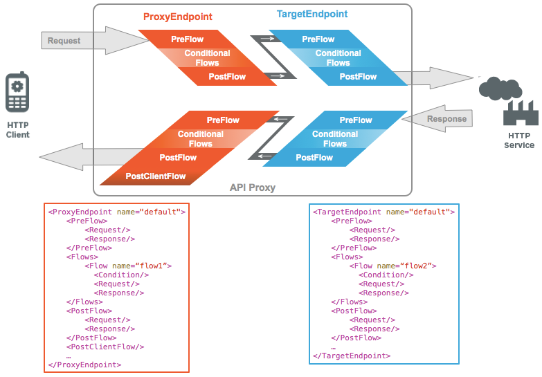
Apigee also supports the OpenAPI specification out of the box, allowing you to auto-generate API Proxies. Apigee has a built-in OpenAPI specification editor and store which you can use to design and maintain your OpenAPI specifications.
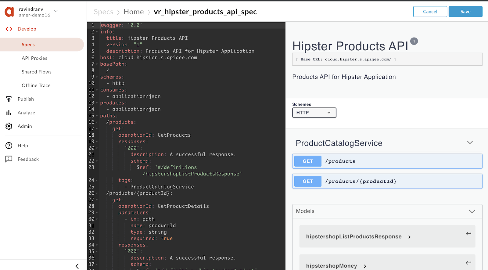
In this lab, we will learn how to
- design an OpenAPI specification for an existing HTTP service and store it within the Apigee platform, and
- create an API proxy that routes inbound requests to an existing HTTP service.
- Basic understanding of OpenAPI Specification (FKA: Swagger)
- Access to an HTTP client to test the API (eg. cURL, Postman, etc.). If you do not have access to one, you can use the Apigee Trace Tool or the Apigee REST client.
Note: During this workshop, as you may be working within an Apigee Organization (Org) that is shared by multiple users. Please prefix all asset names within the Org with your initials. For example, Spec name = {your-initials}_{spec name}, API proxy name = {your-initials}_{proxy name}, etc.
During the course of this lab, the sample HTTP service we will expose as an API endpoint is the Hipster Products service located at http://cloud.hipster.s.apigee.com/products. First, we are going to design and create an OpenAPI specification for the different resource endpoints, i.e. /products and /products/{productId}.
- Go to https://apigee.com/edge and log in. This is the Apigee management UI.
- Select Develop → Specs in the side navigation menu

- As we have a pre-designed sample of the spec available for this lab, we will be importing it into your Apigee Org's Spec Store. Click +Spec. Click on Import URL to add a new spec from existing source.

- Enter spec details. Replace {your-initials} with the initials of your name.
- File Name: {your-initials}_hipster_products_api_spec
- URL: https://raw.githubusercontent.com/apigee/apijam/master/Module-1/Resources/products-catalog-spec.yaml
- Verify the values and click Import. Spec has been imported into Apigee and is ready to use. You should see your spec in the list. For example,
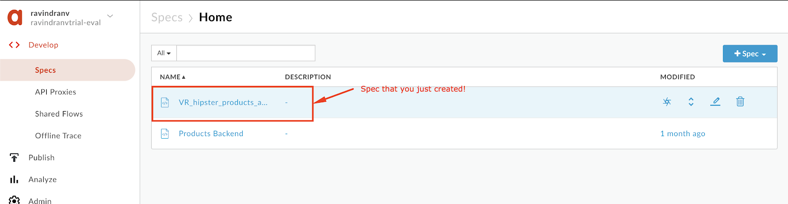
- Click on {your-initials}_hipster_products_api_spec from the list to access the OpenAPI spec editor & interactive documentation that lists API details & API Resources.
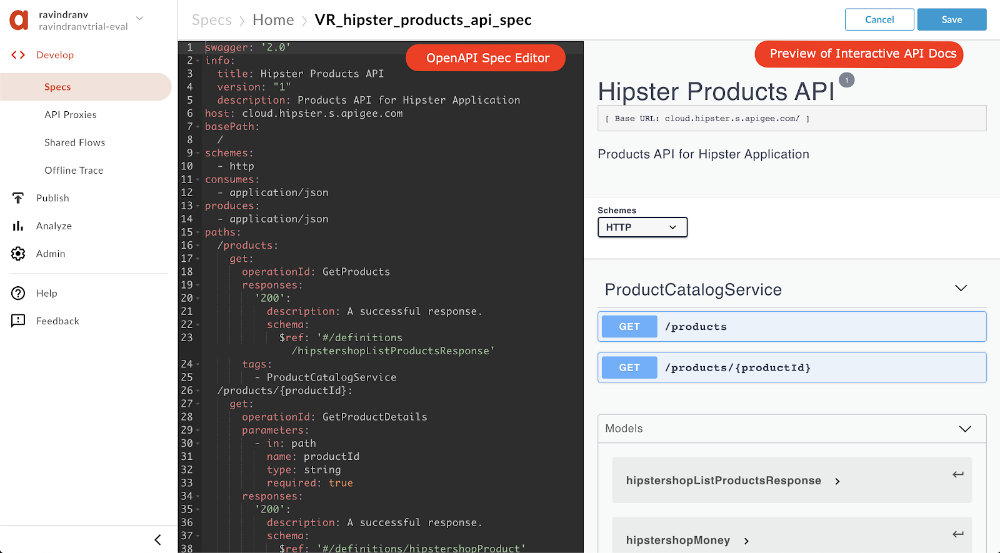
- It's time to create Apigee API Proxy from an OpenAPI Specification. Click on Develop → API Proxies from side navigation menu.

- Click +Proxy The Build a Proxy wizard is invoked.

- Select Reverse proxy, Click on Use OpenAPI below reverse proxy option.

- You should see a popup with list of Specs. Select {your-initials}_hipster_products_api_spec and click Select.

- Enter details in the proxy wizard. Replace {your-initials} with the initials of your name.
- Proxy Name: {your_initials}_Hipster-Products-API
- Proxy Base Path: /v1/{your_initials}_hipster-products-api
- Existing API: Observe the field value which is auto filled from OpenAPI Spec.

- Verify the values and click Next.
- Select Pass through (none) for the authorization in order to choose not to apply any security policy for the proxy. Click Next.

- You can select which API resources, from the list configured in the OpenAPI Spec, should be exposed. Select all & Click on Next

- Go with the secure Virtual Host configuration. Ensure that the default one is unchecked.

- Ensure that only the test environment is selected to deploy to and click Create and Deploy

- Once the API proxy is created and deployed click Edit Proxy to view your proxy in the proxy editor.
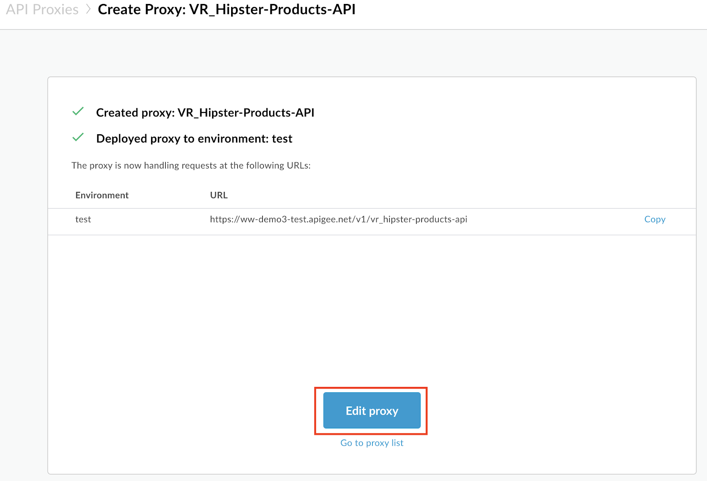
- Congratulations! ...You have now built a reverse proxy for an existing backend service. You should see the proxy Overview tab.
Let us test the newly built API proxy. You can use any HTTP client like cURL or Postman, or the Apigee Trace Tool.
Using cURL
org = Organization name env = Environment where API is deployed
curl -X GET "https://{{org}}-{{env}}.apigee.net/{{your initials}}_hipster-products-api/products"
Using Trace Tool:
- Navigate to your proxy's Trace tab.
- Ensure that the deployed API revision is selected.
- Hit Start Trace Session.

- Wait for Trace session to start.
- Modify the URL to send to a valid API resource - append a '/products' to the end of the URL.
- Hit 'Send'.
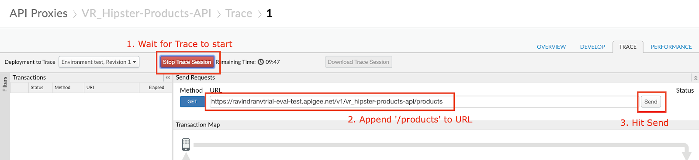
- You will see that the API proxy recieved the request and sent back a HTTP status 200 response which was logged by the Trace session. You can click on the step shown below to view the response body.

Save the API Proxy
- Let's save the API Proxy locally as an API Bundle so that we can reuse it in other labs.
- Save the API Proxy by downloading the proxy bundle, See screenshot below for instructions.

That completes this hands-on lesson. In this simple lab you learned how to use Apigee to proxy an existing backend using an OpenAPI Specification and the Apigee proxy wizard.
Lab Video
If you like to learn by watching, here is a short video on creating a reverse proxy using OpenAPI Specification - https://www.youtube.com/watch?v=3XBG9QOUPzg
Earn Extra-points
Now that you have created a reverse proxy using an OpenAPI spec, click on the Develop tab and explore the flow conditions populated from the OpenAPI spec. Further expore the trace tab in the API Proxy editor which supports filtering traces as well as downloading trace data for offline use. Also, explore the OpenAPI Spec editor which allows you to edit an OpenAPI specification and supports bidirectional navigation between the yaml/json and a live view of the rendered OpenAPI spec. See how you can generate an API Proxy using the "Generate proxy" action in the Specs view. 
Quiz
- How do you import the proxy bundle you just downloaded?
- How does Apigee handle API versioning?
- Are there administrative APIs to create, update, or delete API proxies in Apigee?
References
- Useful Apigee documentation links on API Proxies -
- Build a simple API Proxy - http://docs.apigee.com/api-services/content/build-simple-api-proxy
- Best practices for API proxy design and development - http://docs.apigee.com/api-services/content/best-practices-api-proxy-design-and-development
- Watch this "4 Minute Video 4 Developers" (4MV4D) on "Anatomy of an API Proxy" - https://youtu.be/O5DJuCXXIRg
Rate this lab
How did you like this lab? Rate here.
Duration : 20 mins
Persona : API Team
Use case
You have an API that you want to secure and expose for consumption by different Apps (API consumers). In addition to setting up authorized access to the API, you also want to be able to identify and control which App is making calls to the API so you can customize API behavior based on the the caller, or gather data on consumption patterns by differnt Apps and view that data through Analytics dashboards.
How can Apigee Edge help?
API Proxy - API Product - App Relationship
On Apigee Edge, in order to secure an API Proxy and control access by consumers, we need to first understand the relationship between API Proxies, API Products, and Apps.
While the API Proxy allows you to expose the API endpoint according to API design specification, it also serves to decouple the API backend (target service) from the front end (client Apps), and in turn API production from consumption. This is accomplished by creating 'API Products' which are configurations that define how an API can be consumed. The API Product configuration may contain metadata that defines rules for consumption of the API through the particular API Product. These rules may include allowed consumption quota (Eg. 100 API calls per minute), visibility (Public vs Private vs Internal), API resource restrictions (Eg. Only /products resource URL may be called, but not /products/{product ID}), which API deployment environment the caller is allowed to access (Eg. test, prod), etc. Once the API Products are created, client Apps can then subscribe to them. On subscription, Apigee automatically generates and provisions an API Key/Secret pair for the App. These credentials can then be used to call the API endpoint with authentication and authorization, from within App code.

API Proxy Configuration
While Apigee provides multiple ways of securing an API and authorizing API calls - including API Keys, OAuth, JWT Tokens, and SAML - this lab will focus on using simple API Key verification to secure an API.
Within the API Proxy, the Verify API Key Policy can be used to authenticate and authorize incoming API calls, based on API Key verification. As a result of successful API Key verification, the Verify API Key Policy also populates the API Proxy runtime context with details about the App making the call, the App developer, the API product associated with the call, and so on. This context can then be used to parameterize other policies applied, in order to affect API behavior such as quota enforcement or routing based on the client App. The data can also be extracted and used to gain business insights through Apigee Analytics.
In this lab, you will..
- Configure a Verify API Key Policy for an existing, unsecured API proxy, and use the Apigee Trace tool to see the policy in action..
- Bundle the API Proxy into an API Product.
- Register a Developer and an App within your Org, that subscribes to the API Product, to test authorized consumption of the API.
For this lab, you will need an API proxy that is not currently secured. If you do not have an API proxy available for this lab, revisit lab 1 "API Design : Create a Reverse Proxy from OpenAPI Spec" and then return here to complete these steps.
- Log into the Apigee Edge Management UI at https://login.apigee.com. Navigate to Develop → API Proxies, and select the API Proxy (labeled {your_initials}_Hipster-Products-API) that you created in Lab 1.
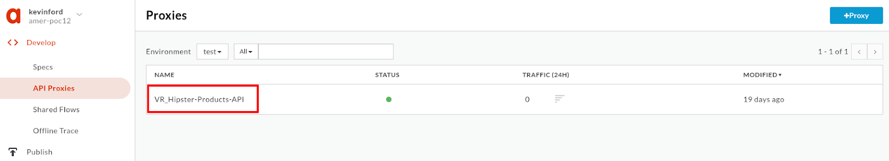
- Verify that the API proxy is deployed to an environment from the Overview page. Environment(s) to which the selected revision of the API proxy is deployed will be indicated by a green circle. If it is not deployed, click an environment from the "Deployment" pull-down to deploy the API proxy to that environment.

- Verify that you can successfully make calls using the built-in trace tool.
- Click the Trace tab near the top of the window.
- The Trace view allows you to initiate tracing for up to 10 minutes, during which time all requests (regardless of whether they are sent from the trace tool or any other client) will be captured and their traces made visible to you.
- Click Start Trace Session to begin a trace session.
- If you're using the API proxy you built in the previous Lab, add the
/productsresource path to the URL prior to sending a sample API call request. Click Send to send a request. - You should see a successful 2xx response for your API Call (it may take a few seconds for the trace results to appear)

- Click the "Stop Trace Session" button.
- To get to the proxy editor, click the "DEVELOP" tab next to the "TRACE" tab, or Navigate to Develop > API Proxies in the side menu, and open your API proxy. Click the Develop tab (in the upper right area of the page) to see the flow editor (you may have to move the panes to see the full request and response flow lines)
- Click +Step on the request flow.

- Select Verify API Key policy from the Security section of the list. And provide the following values:
- Display Name: Verify API Key
- Name: Verify-API-Key
Add

- The policy will be added after any policies you previously had in the Request flow. Since we likely want this to occur first, drag the new policy to be the leftmost of any policies in the flow.
- With the Verify API Key policy selected, you can see its configuration (the default policy configuration is below). Note that the API Key is being retrieved from the context as the variable request.queryparam.apikey. This is the default but the policy can be configured to retrieve the key from any parameter you prefer, for example, request.header.client-id, etc. (note: if you plan to use the Apigee trace tool for the lab, only query parameters are suppoted but if you have an alternative client such as cURL or Postman, feel free to use any parameter you like)
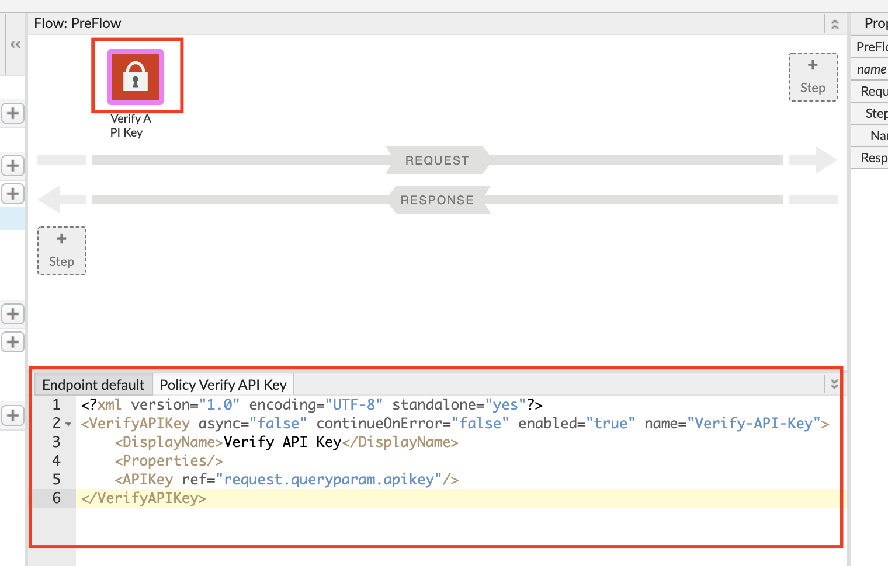
- Save the API proxy.
- Click the Trace tab near the top of the window and click Start Trace Session to begin a trace session.
- If you're using the API proxy you built in the previous Lab, add the
/productsresource path to the URL prior to sending a sample API call request. Click Send to send a request. - You should see a 401 (unauthorized) response for your API Call because the API proxy was expecting an API Key as a query parameter. See the trace session below
- NOTE: In subsequent steps, you will get an API Key that will allow you to make this API call successfully.

- Select Publish → API Products from the side navigation menu, and click the +API Product button.
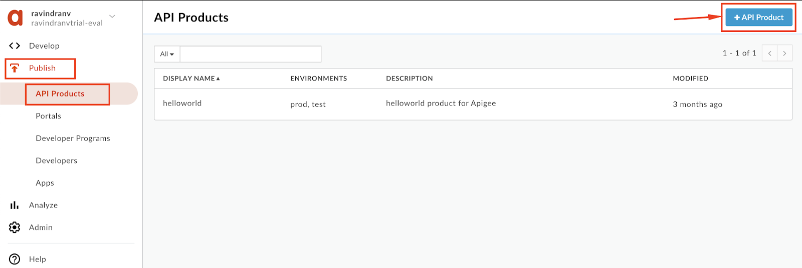
- Populate the following fields
Note: Replace {{your initials}} with your initials, so as to not accidentally modify other developers' work. Eg. API product 'Name = xx_Hipster-Products-API-Product'.
- Section: Product details
- Name:
{{your initials}}_Hipster-Products-API-Product - Display name:
{{your initials}}_Hipster Products API Product - Description:
Product that provides access to the Hipster Products API. - Environment:
test - Access:
Public - Section: API resources
- Section: API Proxies
- Click the Add a proxy link

- In the popup window, select the API Proxy & path radio button. Then select your Hipster Products API Proxy (with deployed revision), select the
/option for Path, and click Add. 
- Save the API Product.

Note: We are adding the entire API Proxy to the API Product. We can just as easily select one or more operations from one or more API proxies and bundle them together in an API Product.
- Select Publish → Developers from the side navigation menu, and click the +Developer button.

- Populate the following details:
- First Name:
{{your initials}}_Test - Last Name:
Developer - Username:
{{your initials}}_testdev - Email:
{{your initials}}_testdev@test.com
- Click Create

- Select Publish → Apps from the side navigation menu, and click the +App button.

- Populate the following details:
- Name:
{{your initials}}_Hipster-Products-App - Disaplay Name:
{{your initials}}_Hipster Products App - Select the
Developerradial option. - Select the developer you previously created.
- Click the Add Product button.

- Select the API Product you previously created, and click Add.

- Click the Create button to save.

- Once created, you will then see that Apigee has generated an API Key and Secret pair for the App. Click on the 'Show' link next to the Key, and copy this API Key.

You can now use this API Key to make a valid API request to your API Proxy.
- Navigate to Develop > API Proxies in the side menu, and open your API proxy. Click the Trace tab near the top of the window and click Start Trace Session to begin a trace session.
- Add the
/productsresource path to the URL prior to sending a sample API call request. In addition, add a query parameter calledapikeywith the value of the API Key you copied. Click Send to send a request. - You should now see that the API request returns a 200 OK response, as the Verify API Key policy has found the API key to be valid.

In this lab you learned how the relationship between API Proxies, API Products and Apps, helps obfuscate API production from API consumption; and how to protect your API proxy using the Verify API Key policy. You then implemented the policy and tested it using the built-in Trace Tool.
Lab Video
If you would rather watch a video that covers this topic, point your browser here.
Quiz
- Why is the Verify API Key policy typically found as the first policy in the Request PreFlow? When might it be in a conditional PreFlow instead of the "All" PreFlow?
- How would you configure the policy to get the API Key from a header called "Api-Key" instead of the default query parameter location?
References
- Link to Apigee docs page
- Verify Api Key Policy https://docs.apigee.com/api-platform/reference/policies/verify-api-key-policy
Rate this lab
How did you like this lab? Rate here.
Duration : 15 mins
Persona : API Product Team & API Dev Team
Use Case
API tiering is a new look at API as a Product. With tiering you provide the base level (e.g. bronze) as a free option. This offer is an entry point to leverage your data offering with a potential upsell to premium API Products. The goal is to upsell to additional functional levels. This term is also known as "freemium". The basic approach is as follows – offer basic functions or call quotas as an entry level and if more data access or more functionality is required, offer these options for a fee. This gives developers the chance to have a working prototype and explore your API in a real life scenario before making an informed purchase decision.
How can Apigee help
Apigee offers the concept of API Products abstracted from the functional logic of API proxies. The proxies can access and enforce the limits defined in API Products. This way the API product team can focus on the business model (e.g. establishing usage quotas and entitled API operations on a per API Product basis) while the API development team works with these values to implement the parametrized behaviour.
Pre-reqs are met if you have completed Lab 1 and Lab 2.
The minimum for this lab is to have a deployed API proxy with a "Verify API Key" policy and a Developer for whom we can register an App that subscribes to our API product.
In this lab we will create different API products that bundle the same API Proxy but with different quotas attached to it.
- Go to https://apigee.com/edge and log in. This is the Edge management UI
- Select Publish → API Products
- Click +API Product


- Populate the following fields
- Section: Product details
- Name: {yourInitials}_Hipster-Products-API-Product-Bronze
- Display name: {yourInitials}_Hipster Products API Product Bronze
- Description: Free version of the Hipster Product API
- Environment: test
- Access: Public
- Quota: 5 requests every 1 Minute
- Section: API resources
- Click the Add a proxy link
- Select {yourInitials}_Hipster-Products-API Proxy and click Add

API products have a set of fields called "Quota" that allow you to configure how many requests per number of time periods (e.g. 5 requests per 1 [minute/hour/day/month]) you want to allow. Just configuring this does NOT enforce quotas though! Think of these fields as metadata that the Quota Policy (enforcement point) can dynamically reference when enforcing the policy.
- Click Save to create the API Product
We now create 2 similar products that represent our Silver and Gold Products with different Quota settings. To create another API Product just follow these steps:
- Click Publish → API Products
- Click +API Product
- For the Silver Product populate the following fields
- Section: Product details
- Name: {yourInitials}_Hipster-Products-API-Product-Silver
- Display name: {yourInitials}_Hipster Products API Product Silver
- Description: Basic version of the Hipster Product API
- Environment: test
- Access: Public
- Quota: 20 requests every 1 Minute
- Section: API resources
- Click the Add a proxy link
- Select {yourInitials}_Hipster-Products-API Proxy and click Add
- For the Gold Product populate the following fields
- Section: Product details
- Name: {yourInitials}_Hipster-Products-API-Product-Gold
- Display name: {yourInitials}_Hipster Products API Product Gold
- Description: Deluxe version of the Hipster Product API
- Environment: test
- Access: Public
- Quota: 1000 requests every 1 Minute
- Section: API resources
- Click the Add a proxy link
- Select {yourInitials}_Hipster-Products-API Proxy and click Add
Now we should end up with 3 API Products resembling our Product tier strategy.

- Select Publish → Apps
- Click +API Product
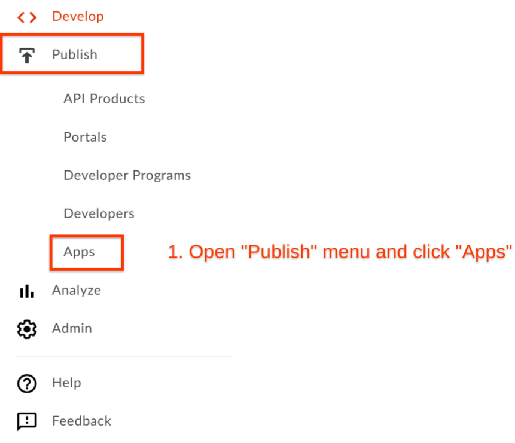

- Populate the following fields
- Section: App Details
- Name: {yourInitials}_Hipster Android App Free
- Display name: {yourInitials}_Hipster Android App Free
- Developer: Chose any existing Developer
- Section: Credentials
- Click Add product

- Select Hipster Product API Product Bronze and click Add

- Click Create to create the App
- Note down the Key for later by clicking on "Show" in the App properties.
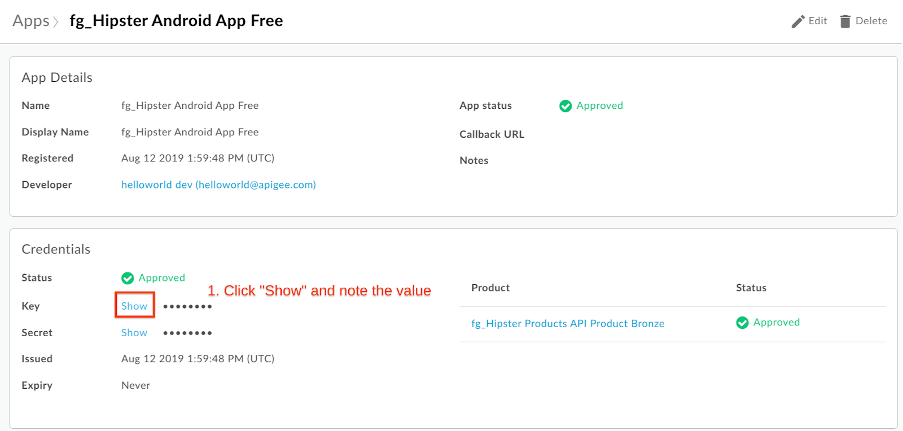
Repeat the process for the Apps that use the Silver and Gold tier as well, with using these values:
- App using the Silver API Product
- Section: App Details
- Name: {yourInitials}_Hipster Android App Basic
- Display name: {yourInitials}_Hipster Android App Basic
- Developer: Chose any existing Developer
- Section: Credentials
- Click Add product
- Select Hipster Product API Product Silver and click Add
- App using the Gold API Product
- Section: App Details
- Name: {yourInitials}_Hipster Android App Deluxe
- Display name: {yourInitials}_Hipster Android App Deluxe
- Developer: Chose any existing Developer
- Section: Credentials
- Click Add product
- Select Hipster Product API Product Gold and click Add
You should end up with three Apps with three different API keys, that you have noted down. Each App's API key will have an associated secret that will be used if you are implementing OAuth.

As stated, quotas are only enforced by adding a Quota Policy into your API Proxy. With the configuration of the Quota fields in the API Product, when an API call is made that presents a valid API key, Apigee will automatically fetch the associated API Product's metadata (including the Quota fields), which become available to be dynamically referenced by a quota (or any other) policy.
- Click on Develop → API Proxies from side navigation menu. Open the existing API Proxy from the prerequisites.
- Verify that the policy for Verify API Key exists with the proper name. Click on the Policy Name and look at the XML configuration below.

- Click PreFlow and + Step to add a new policy

- Click Quota Policy and Populate the following fields
- Display Name: QU-ProductQuota
Click Add to add the policy to your flow.

- With the VerifyAPIKey policy that we have configured in our prerequisites Verify-API-Key, the following variables are populated after verification of an API key that has an API product with the quota fields set as 3 requests per 1 second:
- verifyapikey.Verify-API-Key.apiproduct.developer.quota.limit = 3
- verifyapikey.Verify-API-Key.apiproduct.developer.quota.interval = 1
- verifyapikey.Verify-API-Key.apiproduct.developer.quota.timeunit = second
Important note about variable naming : the variables that Apigee creates to hold the metadata include, as part of the variable name, the policy that was used to verify the API Key which in this example is "Verify-API-Key". If you named your policy "check_the_api_key", you would find the "limit" in the runtime context variable: verifyapikey.check_the_api_key.apiproduct.developer.quota.limit
The next step then is to set the QU-ProductQuota Quota policy to reference these variables and use this code in the Policy Configuration

Note: If the field is not set in the API product, this would allow a default of 3 calls per minute
- Click on Save after you have changed the policy in the previous step

Go to the API proxy and enter the trace tab so we can run some tests:
- Click Trace
- Click Start Trace Session
- Add the Bronze apikey value as a query parameter to the URL (e.g.: http://{yourapigeeorg}-test.apigee.net/v1/{yourInitials}_hipster-products-api/products?apikey=GYuZekimsQ2TLdWWMHkqB1poAquHaGsv
- Run a test by clicking the Send button multiple times

- After 6 calls we see that our free quota of 5 calls is exceeded and the quota policy shows a red exclamation mark sign

Now we switch API products and add the Silver apikey value from our App as a query parameter to the URL (e.g.: http://{yourapigeeorg}-test.apigee.net/v1/{yourInitials}_hipster-products-api/products?apikey=GYuZekimsQ2TLdWWMHkqB1poAquHaGsv
- Change your apikey parameter to match your Silver App credentials
- Run a test by clicking the Send button around 15 times before clicking Start Trace Session
- Start the trace session and click the Send button a couple of times again before reaching your limit.
Let's check out the trace result:
- Click on one of the successful trace results on the left (indicated by a green Status with 200)
- Click the quota policy icon in the Transaction Map

- Here we see at the end of our calls that we only have one count available (ratelimit.QU-ProductQuota.available.count) out of the original 20 (ratelimit.QU-ProductQuota.allowed.count).
- Also have a look at the other variables available as part of the proxy flow.
At this point, we will skip the Deluxe/Gold version of our product, but you get the idea, that your developers won't easily reach the limit with this one.
In this lab you have created 3 products aligned with your API product strategy to offer a tiered model and have different quotas attached to each product. We have not defined the limits in our API proxies but made the same proxy available in different API products that define the quota amount.
Quiz
- What would happen if you leave out the Identifier Tag in the Quota Policy?
- What would happen if the Quota Policy were placed before the Verify API Key policy?
- In the configuration we provided, the ‘Distributed' and ‘Synchronous' attributes were both set to ‘true'. What is the implication if we set these to ‘false'?
- How would you configure the quota so that POST calls are counted as 2 calls for the purposes of evaluating the quota?
References
Apigee Docs Links
https://docs.apigee.com/api-platform/reference/policies/quota-policy